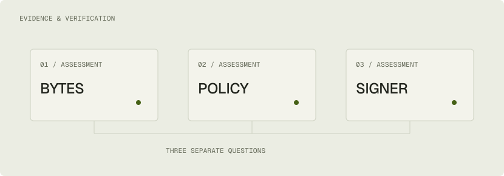
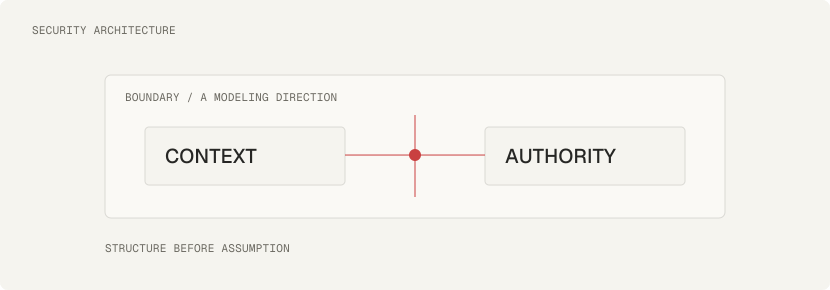

Trace the behavior.
Follow the input, the rule and the result. Start with the system that exists.
What is someone already depending on?
INDEPENDENT
BY DESIGN.
I build considered software. Then question the assumptions holding it together.
ENGINEERING, WITH PERSPECTIVE.
Build with intent.Software engineering
Make boundaries clear.Security architecture
Look past the obvious.Red team thinking
01 A POINT OF VIEW
SOFTWARE / SECURITY / CRAFTA clear state. A deliberate boundary. A small feature that has been thought all the way through.
That is where I like to work: connecting the architecture of a system to the experience of using it.
02 HOW I THINK
A software engineer’s care.
A red teamer’s questions.
BEHAVIOR → BOUNDARY → EVIDENCE
Follow the input, the rule and the result. Start with the system that exists.
What is someone already depending on?
Look past the intended path. Make ownership, authority and failure states explicit.
What still holds when the request is wrong?
Make a focused change. Keep the evidence. Make the consequence clear in the interface.
Can the difference be understood and reviewed?
“Leaving it alone is better
than changing it incorrectly.”MY WORKING PRINCIPLE
03 WORK IN PUBLIC
Personal projects.
Inspectable code. Honest status.

A local release-evidence CLI that checks manifests, file bytes and SBOMs, evaluates the evidence-presence rule, and assesses signatures against independently configured trust.
The browser viewer inspects passport claims; verification runs in the Linux CLI.

A local-first web foundation with a roadmap browser and bounded JSON structure preview. The complete model-to-threat workflow is still being developed.
The current shell does not run the domain engine.
PROFESSIONAL EXPERIENCE
I also develop organizational software. Product details, interfaces, source and internal architecture remain confidential.
View experience04 DON’T JUST READ IT
Change the sample, inspect its SHA-256 digest, sign it and choose whether to trust the demo key. Byte integrity, signature validity and key trust stay separate.
A standalone portfolio experiment; not the Attestara runtime.Open the browser experiment05 THE PERSON BEHIND THE HANDLE
Red teaming taught me to look beyond the intended path. Software engineering taught me that the response has to work for the application and the person using it.
I care about architecture, system design and the visual structure of software. I’m also studying Artificial Intelligence at master’s level.
A little more about me06 FIELD NOTES
All notesTHE NEXT CHAPTER
Open to international rolesSoftware engineering · Security architecture
Open to relocation & selected collaborations